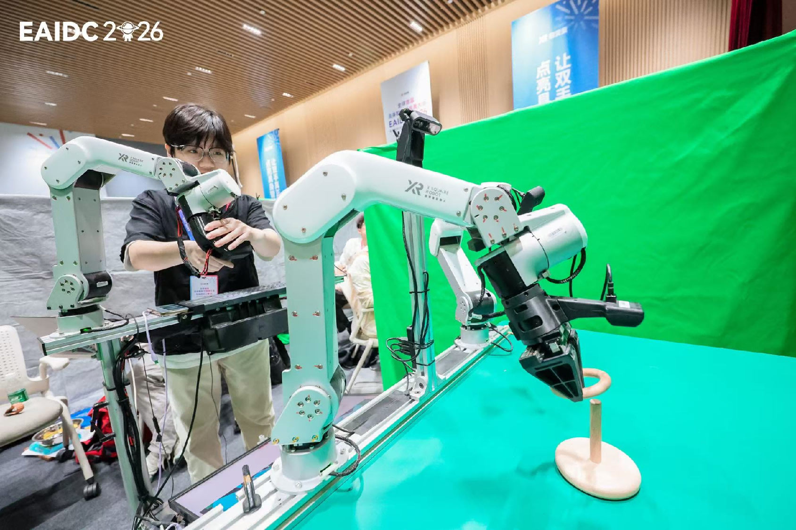
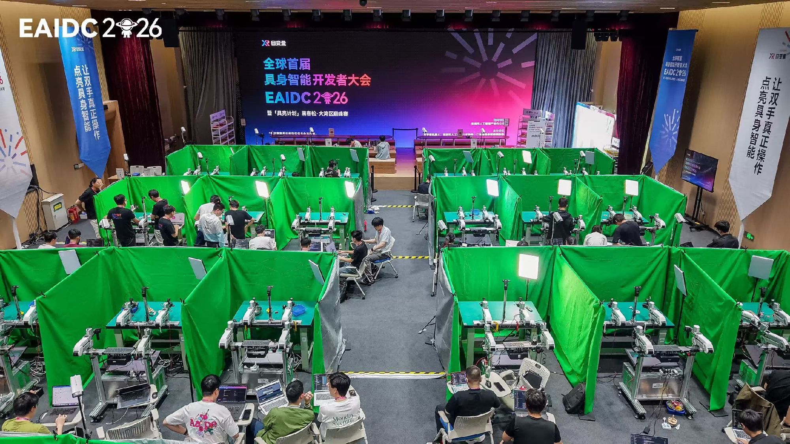
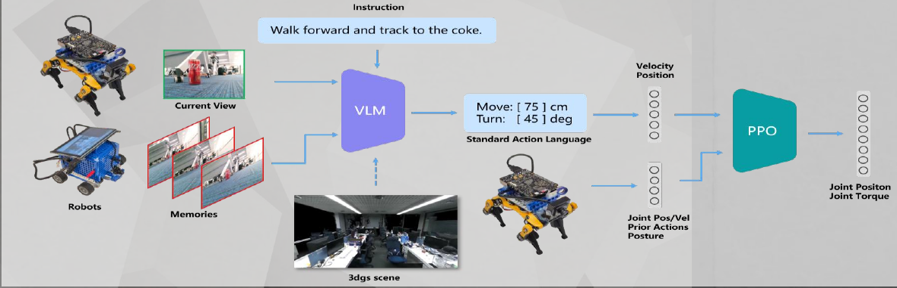
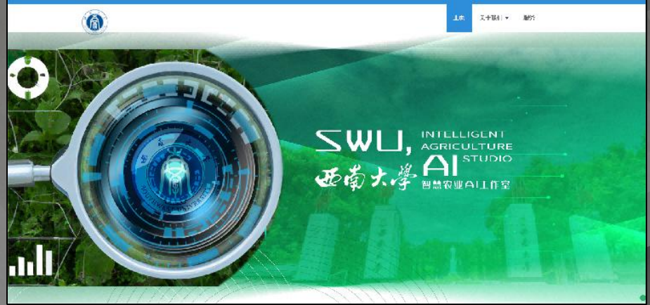
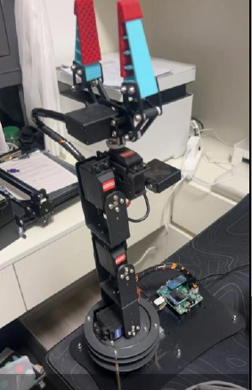
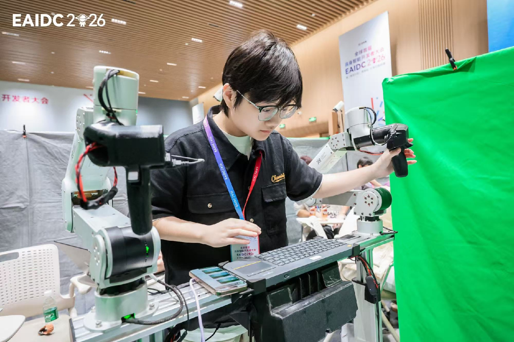

1st
First-author SCI paper

About
我本科毕业于西南大学计算机与信息科学学院软件学院自动化专业，GPA 3.53， 2025 年起在香港科技大学（广州）攻读 MPhil。早期工作集中在 AI 嵌入式部署、 Web 系统与机器人调试，近阶段的核心兴趣转向具身智能、视触觉操控与学习控制。
我喜欢把系统做完整：从前端可视化、边缘设备部署、传感器接入，到遥操作采集、 强化学习实验和真实机械臂验证，尽量把研究链路接起来。
1st
First-author SCI paper
Top 6
EAIDC 2026 overall ranking
Champion
Desktop robot track at AIR camp
Edge + Robot
Deployment-minded systems work
Selected Work
从比赛、研究到系统落地，我更在意完整链条是否真的跑通。

Competition · Embodied AI
在全球首届具身智能开发者大会暨「具亮计划」黑客松中，团队进入 20 强同场竞技， 最终获得三等奖、全场第六名，并在水果分拣任务中拿到满分成绩。

Robot Learning
在清华 AIR - 地瓜机器人具身智能强化营中，参与 VLM 部署与微调、 场景库搭建和轮式/足式机器人建模，项目获得桌面机器人赛道冠军。

Edge AI · Web System
参与智慧农业 AI 工作室网页与病虫害防治系统建设，负责边缘端算法部署、 Web 展示交互与移动底盘方向的系统实现，并产出相关软著与项目成果。

Tactile Manipulation
近期围绕易碎容器操控中的力敏问题，推进基于噪声统计标定的触觉反射控制、 机械臂闭环操作与数据课程设计，形成 IROS 在投与 CoRL 规划中的两个 milestone。
Latest
当前的研究重点落在视触觉反射控制与机器人学习的衔接上：一方面，让控制器在部署阶段 成为可即插即用的安全层；另一方面，把它在训练与遥操作采集中转化为更稳定的课程和数据。

Outputs
Publication
Journal of Materials Research and Technology，第一作者。 负责实验检测数据处理与分析。
Publication
Applied Soft Computing Journal，在投。第二作者， 参与边缘计算方案、数据分析与论文撰写。
Software Copyright
第一作者；另有“基于 Python 和 HTML 的植物病虫害检测分析平台 V1.0” 以学校名义申请。
Patent
国家发明专利申请，第三发明人。延续了我在 Edge AI 与农业场景上的系统化实践。
Journey
加入西南大学人工智能学院 AI 工作室，负责 AI 嵌入式开发部署、机器人开发调试、 Web 网页系统搭建和项目参赛支撑。
参与西南大学材料学院科研工作，围绕 HCPEB 与显微检测数据开展处理分析， 完成跨学科研究训练。
参加清华 AIR - 地瓜机器人具身智能强化营，学习强化学习、Mujoco、 Isaac Gym/Sim 与跨形态机器人控制。
于香港科技大学（广州）攻读 MPhil，持续推进机器人操控、视触觉感知与学习控制相关研究。
在 EAIDC 2026 与相关公开分享中，进一步把研究、系统实现与公开表达连接起来。
Contact
如果你也在做机器人学习、实验平台、触觉感知或边缘部署相关工作，很愿意聊一聊。